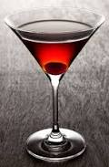
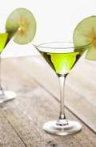

The old fasioned is a true timeless cocktail to cause the drinker to remember the days when men like Don Draper had the run of the town.
Traditionally made by muddling sugar with bitters, then adding the alcohol - traditionally whiskey or bourbon.
A twist of orange rind, and presentation over a single ice cube in a short tumber finishes off this classic of a cocktail.

Bourbon is a traditionally southern spirit, but this timeless drink was created in the northern city of New York City.
3 parts Bourbon and 1 part sweet Vermouth are mixed with a few light dashes of bitters.
Served either up in a martini glass or over ice in a rocks glass, the final touch is a garnish of a Maraschino Cherry.

A favorite of Johnny Depp, thsi simple Bourbon cocktail will pack a punch while delivering a refreshing cleansing of the palette.
2 parts Bourbon mixed with 1 part Lemon Juice will deliver the traditional sour twist sought after by fans of this drink.
Traditionally served over ice with a dash of sugar and two Maraschino Cherries counteract the sour taste.
Vodka Cocktails
- Vodka Martini
- Moscow Mule
- Bloody Mary
- Appletini

The ultimate classic drink, favorites of men such as James Bond - though with Gin -


